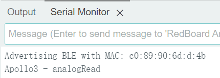
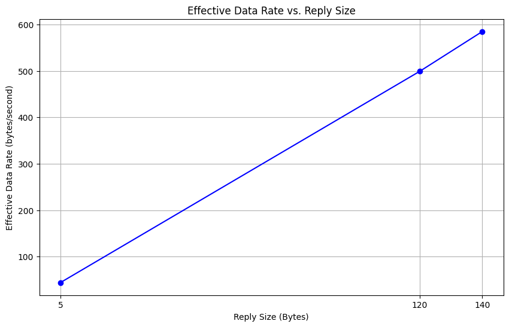

Part 1
Setup for Artemis board and UART communication
By installing the Arduino IDE ands Arduino Core for Apollo3 following the setup instructions, I was able to program and burn into the Artemis nano.
Lab section
Task 1
We were asked to connect the board to computer and burn "Example: Blink it Up" to the board, and after burning it, we could see the built-in LEDs on the board blinking.
Task 2
We were asked to test the serial example. After burning it into the board, some sentences are printed out to the serial monitor. And it echos my input by printing out it in the serial monitor, as shown in the video.
Task 3
We were asked to test the analogRead example. As shown in the video, the temperature readings are printed to the serial monitor in the format {temp, vcc/3, vss, time, temp_f}. I modified the original 'serial.printf' statement, which you can see in the top half of the video, to print the desired format. When I touch the chip, the values of temp, vcc/3, temp_f increase.
Task 4
We were asked to test PDM/MicrophoneOutput example, We were asked to test the PDM/MicrophoneOutput example and as shown in the video, the highest frequency was printed to the serial monitor. When I whistled into the microphone, the output in the serial monitor increased because the whistle frequency was higher than the frequency of the ambient noise.
Task 5
We are asked to program the board to light up the LED on board when playing musical "A" note. I added following code in the loop function: . After burning it to the board, I played this video on my computer. As shown in the video, in the serial output, the loudest frequency is fixed at 434 (Hz), and 'in range' is printed. The 434Hz is close to the frequency of the musical note "A"(440Hz). Also, the LED on the board lights up to show the microphone heard 'A'. Here is the full code.
Part 2
Setup for BLE communication
By burning the ble_arduino.ino into the board, the MAC address 'c0:89:90:6d:d:4b' was printed out to the serial output, as shown in figure 1. By running uuid4() in python script, I can get a generated UUID '3f297411-561b-4f87-a592-c14a7c3c8112' for ble_service, as shown in figure 2. Finally, I checked that the UUIDs used in the Arduino sketch are the same as those connection.yaml in python, and that the command types defined in "enum CommandTypes" in the Arduino sketch are the same as the command types defined in cmd_types.py.
The codebase includes Arduino and Python components. In the Arduino part, 'ble_arduino.ino' initialize BLE service, defining characteristics, handling BLE events, and executing robot commands received over BLE.In the Python component, 'demo.ipynb' initializes the BLE connection, connects to, and sends commands to and receives data back from the robot via BLE communication. Other files manage BLE operations, define command structures, and contain BLE connection parameters.
First, Artemis initializes the BLE service and advertises its presence. Then, the Python script discovers available BLE devices and recognizes the board. Once connected, the Python script can send commands and receive data from the board by writing or reading specific BLE characteristics. Artemis can also send data and receive data by updating or reading characteristics values.
Lab section
Task 1
We were asked to write a ECHO command in ble_arduino.ino. As shown in video, when I sent ECHO command with string 'HiHello' from computer, an augmented string 'Robot says -> HiHello :)' was sent from the board and was received by computer.
Task 2
We were asked to write a GET_TIME_MILLIS command in ble_arduino.ino. As shown in video, when I sent GET_TIME_MILLIS command from computer, a time stamp string 'T:49603' was sent from the board and was received by computer.
Task 3
We were asked to write a notification handler in Python to receive a string value from a board. The callback function extracts the time from the timestamp string. As shown in the video, the cell in the python script started notifying RX_STRING for 3 seconds. During these 3 seconds, if the board sent RX_STRING, the script wound try to extract the time (i.e. 2473256) from the string (if in timestamp format) (i.e. T:2473256).
Task 4
We were asked to write a loop for the board to send timestamp messages to the computer. In the lab1_task4_loop_arduino.ino below is the loop that I added to the write_data() function. Because write_data() is called by loop(), this causes the board to send timestamp messages continuously between 10 and 20 seconds after connecting to the computer.
I wrote a code in Python based on lab1_task3_handler_with_test.py to analyze the received data as shown in lab1_task4_loop_based_on_3.py. As shown in the video, the unit in the Python script started notifying RX_STRING for 3 seconds. During these 3 seconds, if the board sends RX_STRING, the script tries to extract the time from the timestamp string and store it in received_messages. Then, it calculated the total time of sending, the number of message that were sent, and the size of these messages. Finally, I got 19 messages in 0.615 second. Thus, the effective data transfer rate is 30.894 messages per second and 1235.772 bits per second.
Task 5
We were asked to write a program for the board to record a certain number of timestamps into an array and send this array to the computer when command SEND_TIME_DATA is received. lab1_task5_send_time_data_cmd_arduino.ino below contains the code added to the write_data() function and the SEND_TIME_DATA command added to handle_command(). Since loop() calls write_data(), this causes the board to record a timestamp between 10 and 20 seconds after connecting to the computer.
I wrote a code in Python to send the SEND_TIME_DATA command and print the received data as shown in lab1_task5_send_time_data_cmd_py.py. As shown in the video, the Python script sends the command and starts notifying RX_STRING for 60 seconds. During these 60 seconds, the board sends elements of the array, which the script accepts and stores in received_messages_about_time_array_ele. Finally we can see that the board shows 400 messages sent and the computer receives the same number of messages.
Task 6
We were asked to write a program for the board to record a certain number of synchronized temperature readings and timestamps to two arrays and send them to the computer when GET_TEMP_READINGS are received. The following 'lab1_task6_send_temp_data_cmd_arduino.ino' contains the code added to the write_data() function and the GET_TEMP_READINGS command added to the handle_command(). Since loop() calls write_data(), this causes the board to record temperature readings and timestamps between 10 and 20 seconds after connecting to the computer.
I wrote a code in Python to send the GET_TEMP_READINGS instruction and to accept the data and store it in the temperature and timestamp arrays, respectively, and print the received data, as 'lab1_task6_send_temp_data_cmd_ py.py' shown. As shown in the video, the Python script sends the command and starts notifying RX_STRING for 60 seconds. During these 60 seconds, the board sends the elements of the array and the script receives, processes, and stores the data. We can see that the board shows 400 messages sent and the computer receives the same number of messages.
Task 7
Method 1 is real-time data transmission. Whenever the board gets a piece of data, it sends it to the receiver immediately. The advantage is that this allows the receiver to give immediate feedback based on the received data. And there is no need for complex data management and storage on the board. The disadvantage is that the effective data transfer rate is low because every BLE packet sent needs a overhead. It is suitable for monitoring application that needs real-time data.
Method 2 is batch data transmission. A certain amount of data is stored on the board and then uniformly sent to the receiver. The advantage is that it increases the effective data transfer rate by reducing the overhead with sending each piece of data individually. It also has less risk of data loss because storing data into arrays is faster than sending data individually. The disadvantage is that this requires additional data processing on the board and uses limited storage space. Also this causes a delay between data collection and data transmission. This method is suitable for applications that value data throughput and where the board will experience scenarios with bursty data generation.
According to output of task 5, the computer receive an array contains 400 messages in 12504-10001=2503ms=2.503seconds. So, the second method can record data in the rate of 159.8 messages per second or 8949.261 bits per second.
In the time stamp array, each time stamp is about 7 bytes + 1 byte('\0') = 8bytes. Array overhead is 4 bytes(pointer size) * num of string. Approximately, each time stamp uses 12 bytes. So, 384kB of RAM can store 1024 * 384 / 12 = 32768 time stamps.
Task 8
Short packets introduce larger overhead This is because the fixed costs associated with initiating and terminating communications are a larger percentage of the total transmission time when the data is small. The larger replies help to reduce overheadthe because the fixed costs are amortized over a larger amount of data. As you can see in the following plot, when the reply sizes increases, the effective data rate increases. However, since EString has limitation on string size, I did not test reply size that is greater than 150 bytes. The following code shows how I send the command and calculate the round-trip time.
Task 9
When I programmed the board to send a fixed string 1000 times at fixed baud rate. I expected that my computer may not receive 1000 strings from the board. However, there is no packet loss. Computer read all the data published from the board. I also tried to use a higher baud rate, but there's still no packet loss. However, if I make the board to send more data, in different type or in different speed, there may have packet loss occur.
Discussion
In this lab, I learned about configuring a new board and the way Bluetooth communication works between the computer and the board. Understanding and using some of the fixed functions needed to communicate with BLE was a challenge. But programming according to the given case can solve this problem.